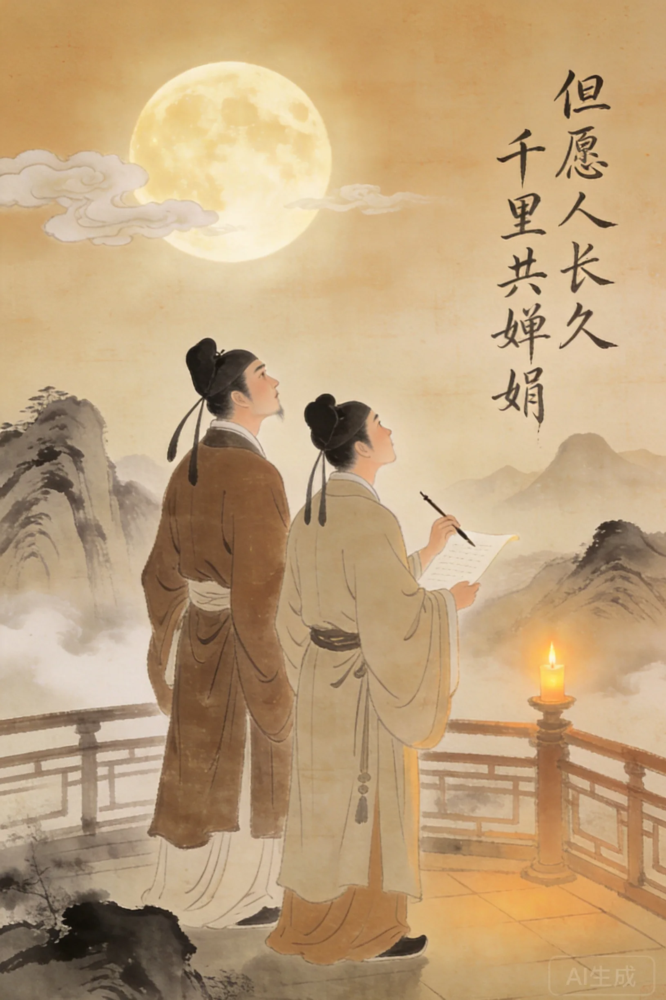
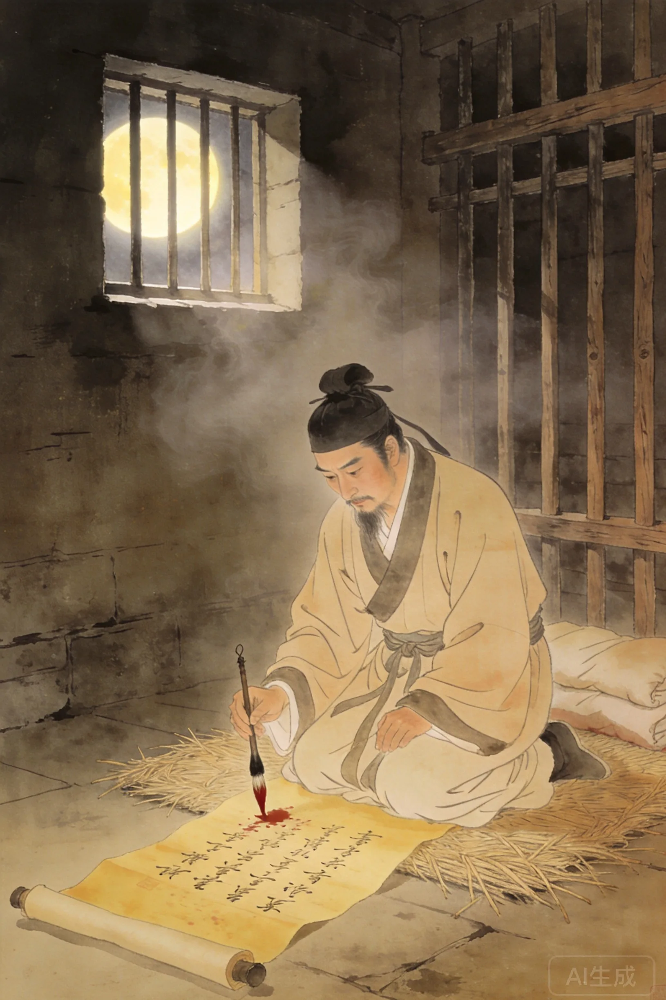
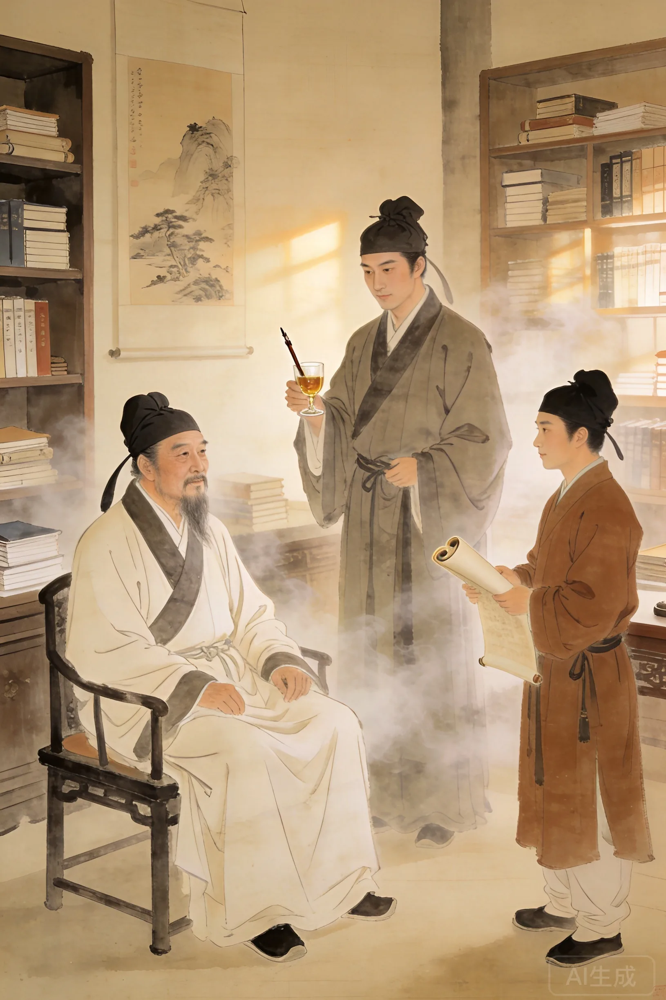
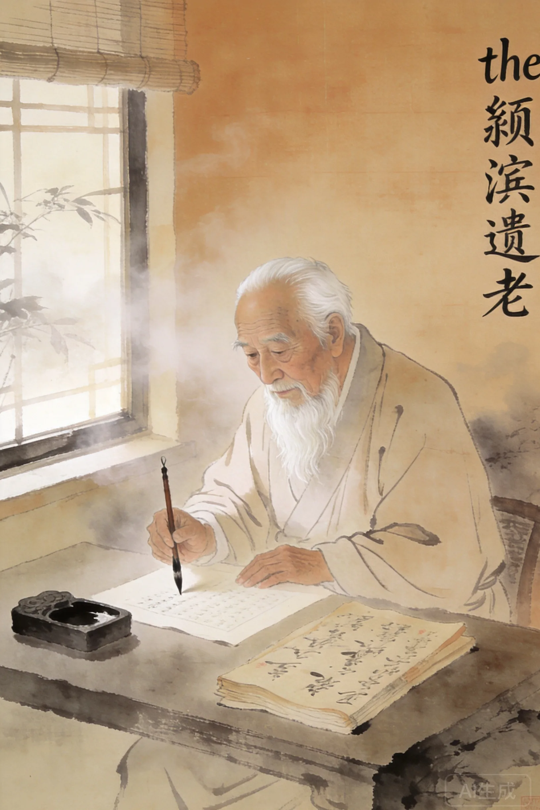

字子由，号颍滨遗老。与父苏洵、兄苏轼并称「三苏」。
十九岁与兄苏轼同榜进士及第。
苏轼下狱，苏辙上书愿以自身官职赎兄之罪。
被召回朝，历任中书舍人、户部侍郎。
被贬至雷州、循州。
遇赦北归，定居颍川，闭门著书。
七十三岁病逝。

苏轼因乌台诗案下狱，生死未卜。苏辙上书神宗，愿以自身官职为兄赎罪：「臣早失怙恃，惟兄轼一人相须为命……愿纳在身官以赎兄罪。」这封奏表至今读来仍令人动容。苏轼千古名篇《水调歌头·明月几时有》小序写道：「丙辰中秋，欢饮达旦，大醉，作此篇，兼怀子由。」「但愿人长久，千里共婵娟」——写给弟弟子由的。
**从《六国论》开始读。** 苏辙的策论有一种他哥哥没有的冷冽——他分析六国灭亡像一个棋手复盘一盘棋局，不抒情，只找那一步走错的地方。然后读《黄州快哉亭记》，你会发现他冷冽的文笔下压着对他哥哥最深的挂念。
苏轼下狱，苏辙上书愿以自身官职为兄赎罪。这份手足之情震烁千古。
《水调歌头》中「但愿人长久，千里共婵娟」正是写给苏辙的。
苏辙的《六国论》与苏洵的同名文章并称千古——父论意志，子论战略。
苏辙一生的创作动力中，「哥哥」是最核心的关键词之一。苏轼因乌台诗案下狱时，苏辙上书愿以自身官职赎兄之罪。苏轼被贬到哪里，苏辙就跟到哪里——不是身体跟着，是心跟着。「但愿人长久，千里共婵娟」——苏轼把最美的词写给了弟弟。而苏辙把最长的墓志铭写给了哥哥。中国文学史上没有比这对兄弟更动人的手足之情。
一棵种在大树旁边的树。苏辙的质地是「甘居第二」——不是因为不够好，是因为他觉得第一已经有人了，他做第二就行。但他的「第二」不是任何人的「第二」——他的《六国论》和他父亲的同名文章放在一起，谁也说不清哪篇更好。「但愿人长久，千里共婵娟」——苏轼写给子由，子由把这句词装在心里过了一辈子。

三苏中最耀眼的星。兄弟二人一生患难与共。苏轼去世后苏辙为其作墓志铭。
三苏之一。以《六国论》名世。
主考官。读了苏轼苏辙的卷子后叹：「三十年后，无人再谈论老夫。」
苏辙出生那年，欧洲正在建立第一批大学。他生活的年代见证了诺曼征服英格兰（1066年）和第一次十字军东征（1096年）。当欧洲骑士向耶路撒冷进军时，中国正在经历王安石变法——世界上两个最发达的文明在同一时刻选择了完全不同的道路。
苏辙与父苏洵、兄苏轼并称「三苏」，同为唐宋八大家。他的《六国论》与苏洵的同名作品是中国策论的双璧。他的散文以「汪洋澹泊」见称，明代归有光、清代桐城派都曾从苏辙处汲取养分。最重要的是——他是中国文学史上最伟大的兄弟情的另一半。
